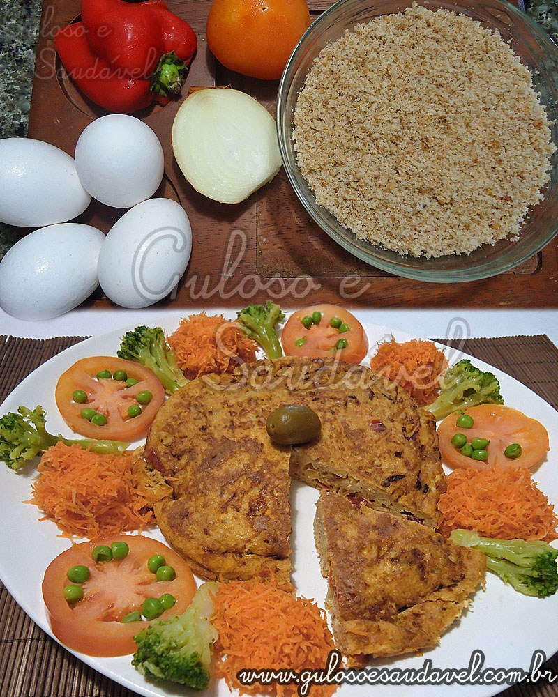
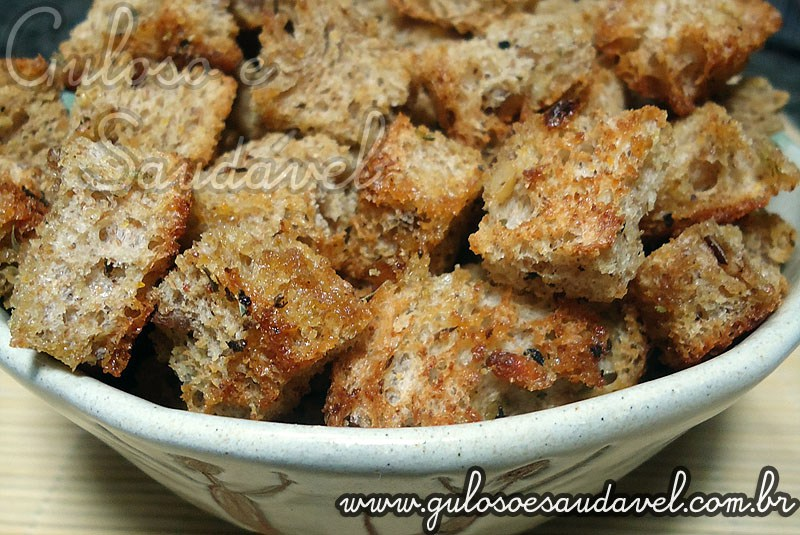
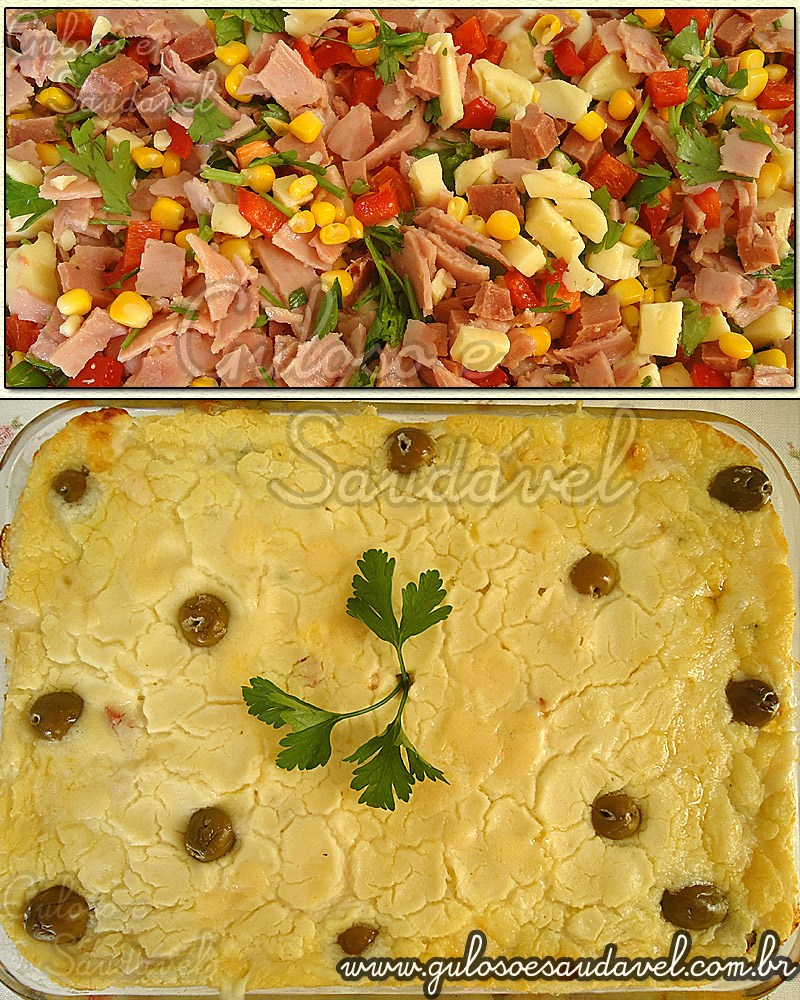
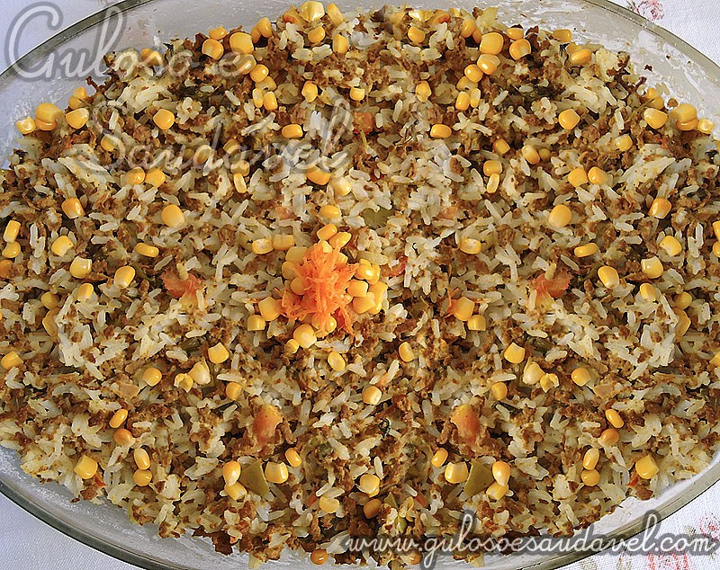
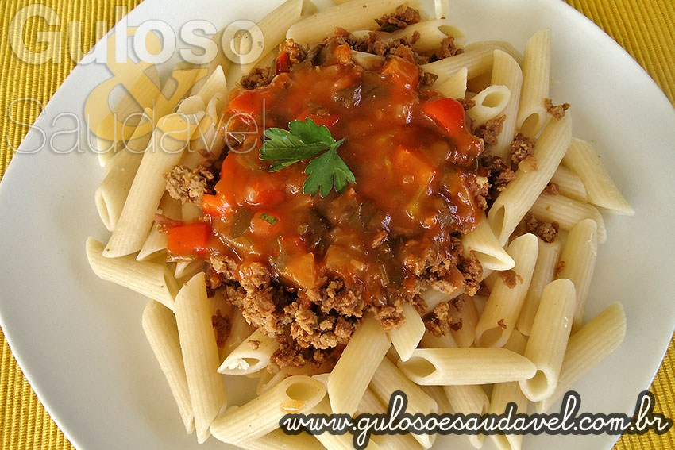
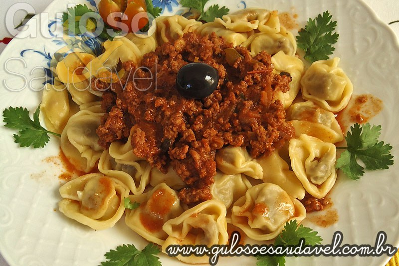

Receitas para reaproveitar os alimentos
O pão ficou duro e ninguém mais o quer?
-

Omelete de Pão
Fácil de fazer e só leva 15 minutos.
-
Pudim de Pão
Fácil de fazer e serve 14 porções.
-
Pudim de Pão e Banana
Guloseima Brasileira e fácil de fazer.
-

Croutons Integrais com Ervas
Receita Brasileira que só leva 15 minutos.
Preparou arroz a mais do que o necessário e não sabe o que fazer?
-
Risoto de Camarão
Receita Italiana que serve 5 porções.
-
Risoto de Abacaxi com Ervas
Receita Italiana que leva 20 minutos.
-
Risoto de Sururu ou Mexilhão
Receita fácil de fazer que serve 8 porções.
-

Torta de Arroz
Receita Brasileira que serve 10 porções.
-

Arroz de Forno com Carne de Soja
receita Brasileira que leva 20 minutos.
O que fazer com sobras de carne?
-

Penne à Bolonhesa com Molho de Melancia
Receita Brasileira fácil de fazer.
-
Rocambole de Carne Light
Fácil de fazer e rende 7 porções.
-
Lasanha de Banana
Receita Italiana que rende 8 porções.
-

Capeletti ao Molho de Carne
Receita Italiana que leva 25 minutos.